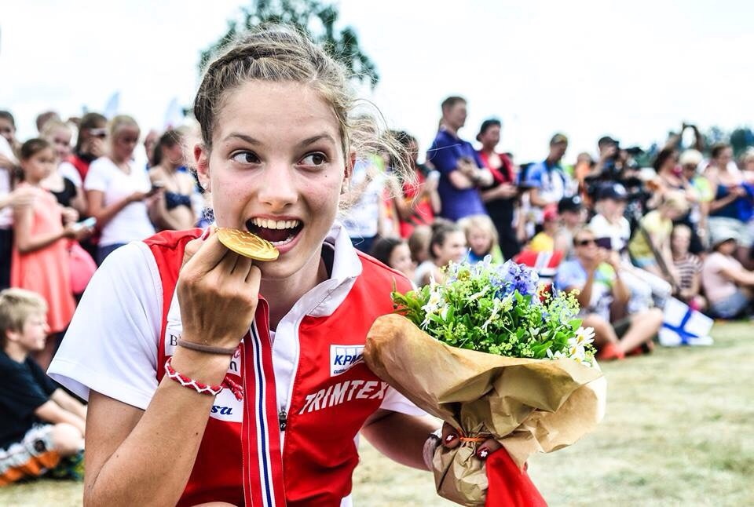
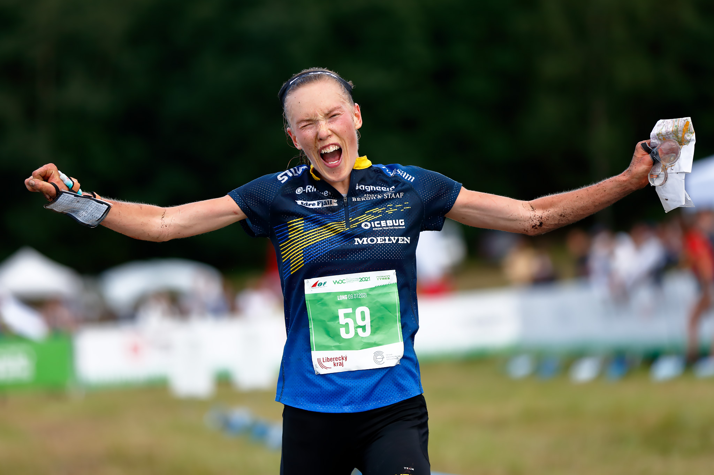

Simona Aebersold
Simona Aebersold er en sveitsisk orienteringsløper. Hun er født i 1997 i Sveits og begynte med orientering som barn. Aebersold har hatt en imponerende karriere og oppnådd betydelige resultater. Hennes tekniske ferdigheter og hurtighet i skogen har gjort henne til en av de mest talentfulle orienteringsløperne i verden. Et av høydepunktene hennes er deltakelse i Verdensmesterskapet i orientering i 2019, der hun vant gullmedaljen i sprintdisiplinen. Dette var hennes første individuelle gullmedalje i et internasjonalt mesterskap. Hun er en stor inspirasjon for unge orienteringsløpere og har bidratt til å øke sportens popularitet.

Kasper Fosser
Kasper Fosser er en norsk orienteringsløper som har markert seg som en av de mest talentfulle utøverne i sin idrett. Han ble født 10. april 2000 i Norge og begynte med orientering i ung alder og har lenge løpt for Heming. Nå løper han for det meste for IF Göteborg, men fremdeles også for Heming. I VM i Tsjekkia 2021 tok han ett gull og tre sølv og er med det den yngste verdensmesteren i historien på herresiden. Med sin unge alder og allerede imponerende liste over prestasjoner, har Kasper Fosser et stort potensial for videre suksess i orienteringssporten. Ikke bare presterer han innenfor orienteringssporten, men han han vant også VM i skyrunning 2021 i klassen U23.

Tove Alexandersson
Tove Alexandersson er en svensk orienteringsløper som anses å være en av de mest talentfulle og suksessrike utøverne i historien til orienteringssporten. Et av høydepunktene hennes er deltakelsen i VM i 2015, der hun vant fire gullmedaljer i fire forskjellige disipliner: sprint, langdistanse, mellomdistanse og stafett. Hun har også oppnådd suksess i skiorientering og har blitt verdensmester i sporten flere ganger. Alexandersson er anerkjent for sin sterke fysiske form, utholdenhet og tekniske ferdigheter. Hun er kjent for sin evne til å ta raske og presise beslutninger i krevende orienteringssituasjoner. Tove er et symbol på svensk orientering og en ambassadør for sporten. Det er ingen tvil om at Alexandersson vil fortsette å levere imponerende prestasjoner og sette nye standarder i sporten.